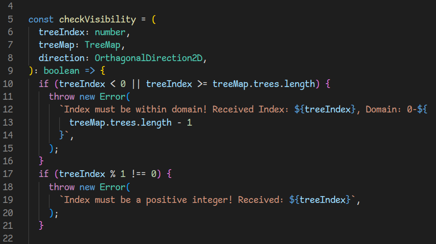
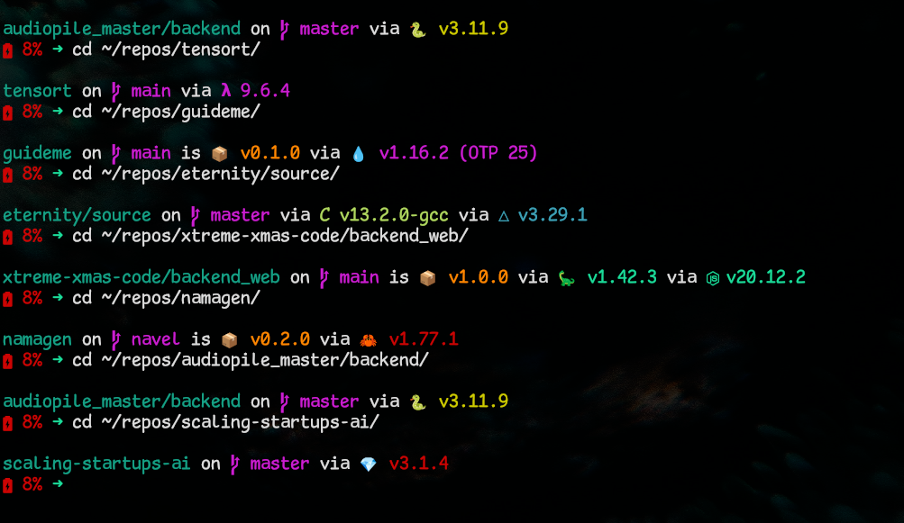
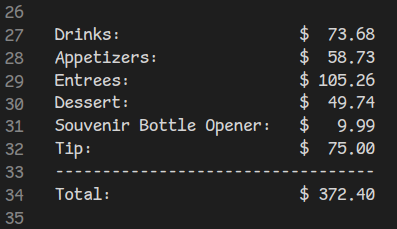

Serious Shanns
A legible monospace font for playful professionals. Comic Sans for hackers
This font is a fork of dtinth's Comic Mono, which in turn is a fork of Shannon Miwa's Comic Shanns (version 1)
Example Text
the five boxing wizards jump quickly.
THE FIVE BOXING WIZARDS JUMP QUICKLY!
0123456789.:,;(*!?')
aoe i|I1lL oO08 qg9CGq [{()}]
Downloads
Nerd Font
Regular
- SeriousShannsNerdFont-Regular.ttf
- SeriousShannsNerdFont-Italic.ttf
- SeriousShannsNerdFont-Bold.ttf
- SeriousShannsNerdFont-BoldItalic.ttf
- SeriousShannsNerdFont-Light.ttf
- SeriousShannsNerdFont-LightItalic.ttf
- SeriousShannsNerdFontMono-Regular.ttf
- SeriousShannsNerdFontMono-Italic.ttf
- SeriousShannsNerdFontMono-Bold.ttf
- SeriousShannsNerdFontMono-BoldItalic.ttf
- SeriousShannsNerdFontMono-Light.ttf
- SeriousShannsNerdFontMono-LightItalic.ttf
- SeriousShannsNerdFontPropo.ttf
- SeriousShannsNerdFontPropo-Italic.ttf
- SeriousShannsNerdFontPropo-Bold.ttf
- SeriousShannsNerdFontPropo-BoldItalic.ttf
- SeriousShannsNerdFontPropo-Light.ttf
- SeriousShannsNerdFontPropo-LightItalic.ttf
Monospaced
Proportional
What?
Serious Shanns is a legible monospaced font made to resemble the classic Comic Sans font we all know and love. It is designed to be suitable for use in a professional coding environment while retaining the playfulness of the original
Here's what it looks like viewing one of my Advent Of Code functions in VS Code:

Here it is in the terminal, showing off the fancy Nerd Font symbols:

Why?
Many reasons!
- • Comic Sans is renowned as a dyslexia-friendly font !
- • To help overcome writer's block, some writers change the font of their word processor to Comic Sans. Perhaps the jaunty style helps put our brains in a playful mood so we can just write without getting hung up in self-criticism
- • Some people just like the look of Comic Sans ¯\_(ツ)_/¯
Serious Shanns aims to provide that same experience for programmers and their IDE's. As coders, we also enjoy playful styling and tools that help us just get to work. But most of us like to have certain standards that make our work easier. Monospacing and legibility are important factors that facilitate quick scanning of many lines of code
Legibility
Legibility means being able to quickly tell which character is which. In fonts with low legibility, for example, it can be difficult to tell the difference between an upper case 'I' and a numeral '1'
Monospacing
Monospacing means ensuring every character has the same width. This is helpful to quickly line up rows of text. For an example of why this is helpful, consider adding up a fancy dinner bill:

Without a monospaced font, getting all those numbers to line up for easy adding would be a pain!
Origins
I originally changed the font in my IDE to Comic Mono as a joke. I decided to leave it that way for a while for fun, and found that it actually seems to help my mindset while working. I made Serious Shanns as my own leetle fork to improve the usability of the font ^_^
Differences from Comic Mono:
- • Edits the 'a' to make it look less like an 'o'
- • Edits the 'l' to make it look less like a '1'
- • Adds a Light weight style
- • Adds Italic styles for each weight style
Changelog
v1.0.0 | 2023-03-17
- • Initial release
v1.1.0 | 2023-09-04
- • Adds Nerd Font patch
v2.0.0 | 2024-06-03
- • Edits the 'l' glyph
v2.0.1 | 2024-06-04
- • Edits the 'l' glyph to make it look less like 'L'
v2.0.2 | 2024-06-05
- • Edits the 'l' glyph's tail and kerning
- • Adds additional Nerd Fonts
- • Fixes the width of char 61 (the Nerd Font script told me this was an issue?)
- • Updates font naming
- • Updates metadata
- • Adjusts alignment of 'l' glyph in .otf versions
- • Updates the font name
- • Edits the 'Y' to make it look less like a 'y'
- • Adds 'λ'
- • Removes TrueType versions
- • Fixes self-intersections
- • Adds points at extremata
- • Fixes rendering issues based on Em Size
- • Moves file format from OpenType to TrueType
v3.0.0 | 2024-06-05
v3.0.1 | 2024-06-05
v4.0.0 | 2024-06-11
v5.0.0 | 2024-08-28
Any issues?
If you notice any, please feel free to open an issue!
The Light weight version could use a little refining still (the height and x-height seem to be off for some glyphs). I improved the x-height for the Light Italic style (where it was especially noticable) but I have not yet improved Light Original
There are some horizontal alignment issues with t/T's and f's in the Italic styles
GitHub
Serious Shanns is hosted on GitHub!
See Also
Comic Shanns Mono is another fork of Comic Shanns. If you need more characters and don't need the glyph changes and extended styles, it might be the right choice for you!
License
Serious Shanns is licensed under the MIT License
Contributors
In addition to those listed in the LICENSE , thank you to the following contributors( emoji key ):

Victor LEFEBVRE 🐛 |